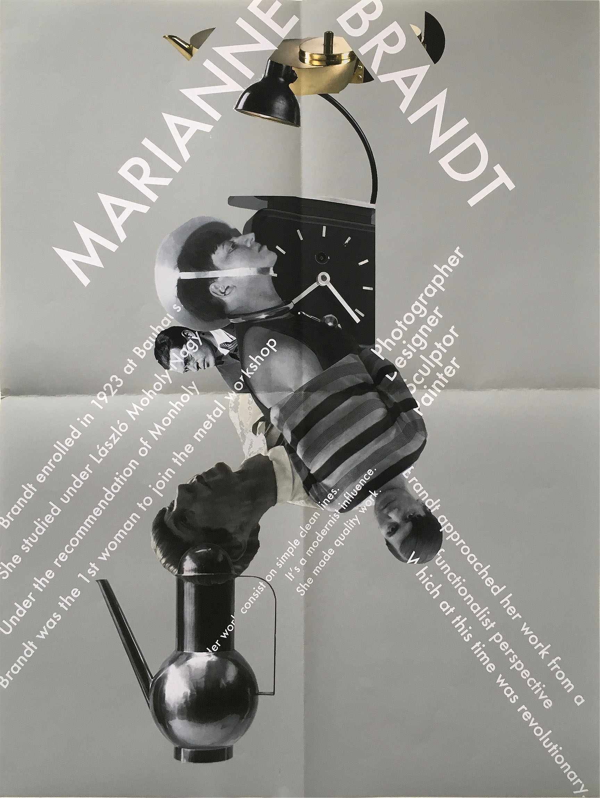

Mariant Brandt

I was inspired by Mariant Brand and her success at the Bauhaus. Brandt was very unique so I decided to make this poster unique as well. I knew I wanted to have an object in the middle based on one of her works. I combined her major influences, and few pieces of her work to make the object in the middle. I used the grid to place the typography.